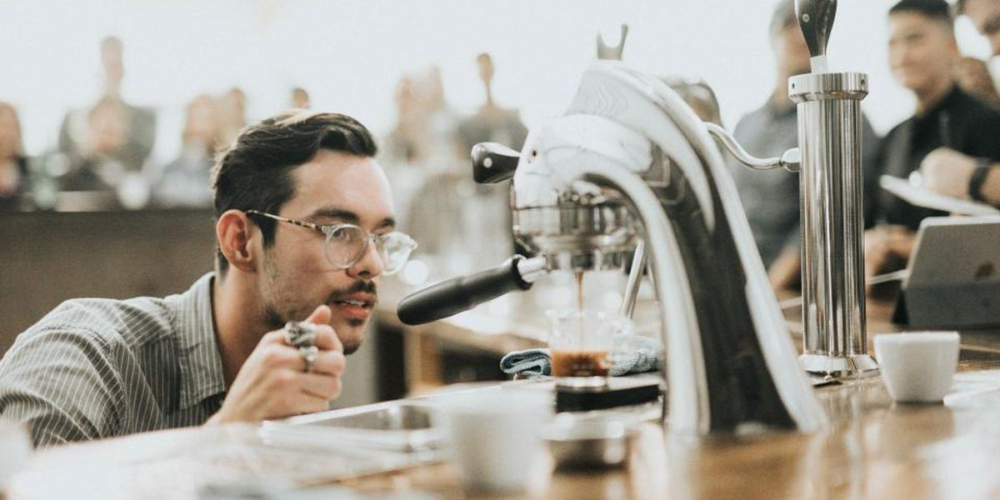

“5 kahveye 1 bedava” ayda 11.500 bardak dağıtıyor, çoğu zaten her gün gelene
Ücretsiz kahvelerin yüzde 72'si haftada en az beş gün gelen 1.900 müşteriye gidiyor. Uygulama bir yılda satışı yalnızca yüzde 4 artırdı.

Demli Kahve Yeme-İçme · Ankara · 80 çalışan · 9 şubeProblem
Demli Kahve'nin kendi işlettiği dört şubede bir yıldır “5 kahveye 1 bedava” uygulaması var. Bu şubelerde ayda 96.000 bardak kahve satılıyor, 11.500 bardak da ücretsiz veriliyor. Ortalama bardak fiyatı 140 TL; ücretsiz kahvelerin liste değeri 1,61 milyon TL. Dört şubenin aylık net kârı ise 1,3 milyon TL.
Finans Müdürü Cihan Bulut kart kayıtlarını inceledi. Ücretsiz bardakların 8.300'ü, yani yüzde 72'si, haftada en az beş gün gelen 1.900 müşteriye gidiyor. Bu müşteriler uygulamadan önce de her gün geliyordu. 8.300 bardak 140 TL'den ayda 1,16 milyon TL eder. Uygulama başladığından beri satılan bardak sayısı yalnızca yüzde 4 arttı. Cihan Bulut'a göre şirket, zaten gelen müşteriye her ay kârına yakın bir tutarı hediye ediyor.
Pazarlama Sorumlusu Nazlı Erkan uygulamayı kaldırmaya karşı: “O 1.900 kişi bizim en iyi müşterimiz. İki sokak ötedeki rakip dört kahveye bir veriyor; hediyeyi geri alırsak ilk gidecek olan onlar.” Kurucu Alper Sönmez ikisinin arasında kaldı; ne kârı ne de her sabah adını bildiği müşterileri kaybetmek istiyor.
Rakamlarla
Çözüm önerisi Yapay zekâ önerisi
1İlk 24 saat
- Önce doğru soruyu sor: bu uygulama kimin davranışını değiştiriyor? Zaten her gün gelen müşteriye verilen ücretsiz kahve ödüldür, ama satış getirmez.
- Müşterileri geliş sıklığına göre üçe ayır: her gün gelenler, haftada bir iki kez gelenler, ayda bir uğrayanlar. Ücretsiz kahvenin her grupta ne kadar ek satış getirdiğine bak.
2Bu hafta
- Uygulamayı kaldırma, eşiği yükselt: 5 kahveye 1 yerine 8 kahveye 1. Her gün gelen müşteri yine kazanır, ama ayda dört yerine iki üç ücretsiz kahve alır.
- Ücretsiz kahveyi şubenin boş saatlerine yönlendir. Sabah 08.00'de kuyrukta verilen bedava kahve satışı engeller; 14.00 ile 17.00 arasında verilen ise boş masayı doldurur.
- Haftada bir iki kez gelen müşteriye ayrı bir teklif yap: bu hafta üçüncü gelişinde tatlı bizden. Sıklığı artırabileceğin grup bu.
- Değişikliği bir ay önceden duyur ve birikmiş hakları yakma. Kuralı değiştirebilirsin, ama verilmiş sözü geri alamazsın.
3Kalıcı çözüm
- Uygulamayı dağıtılan bardakla değil, getirdiği ek satışla ölç ve her üç ayda bir bu hesabı yeniden yap.
- En sadık müşteriye paradan başka şeyler ver: yeni çekirdeği ilk o tatsın, adı bardağa sormadan yazılsın. Her gün gelen insanı tutan indirim değildir.
- Rakibin kampanyasını ölçüt alma. Onun kârını bilmiyorsun; belki o da aynı hatayı yapıyor.
Çıkarılacak dersZaten gelecek müşteriye verilen hediye sadakat yaratmaz, yalnızca kârı azaltır.